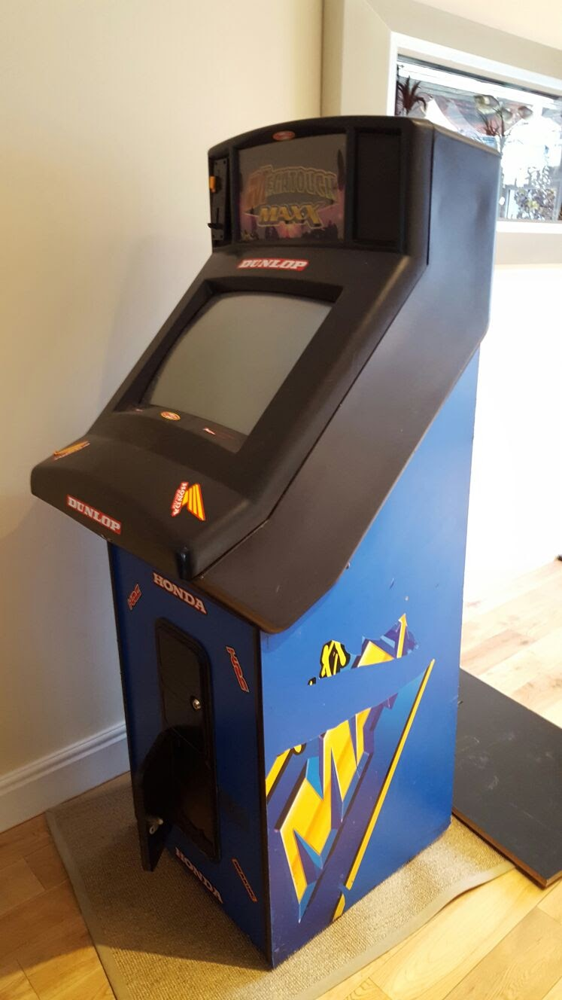
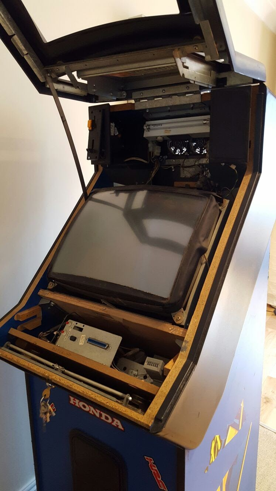
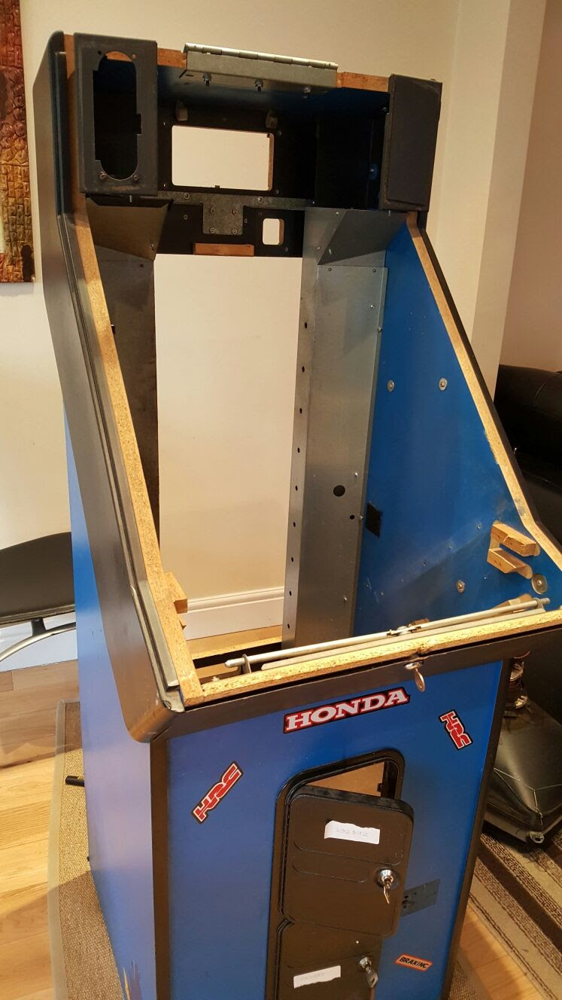

My Arcade machine
The very first day
First of all, I bought an old, broken arcade machine from Gumtree, the seller had told me that nothing on the inside was working and it had suffered water damage, so he had it on sale for the wood parts especially. Which was exactly what I wanted :) I managed to negotiate the price from £40 down to £15, which was even better for me because I wanted to be spending more on the project itself and not just the casing. Fortunately, the seller was only about a 20 minute drive from me so this made transportation a lot easier, we managed to fit it into my mum's car.
 After getting it home and into our house, I was eager to see what was inside, how it was built and what engineering processes were used to create such a durable product. The seller provided me with all the keys to open up the arcade machine storage compartments as well as the whole top. It was very well made but extrememly heavy. Opening up the arcade machine really gave me an insight into how each part fits together easily for manufacturing.
I then powered it up and as the seller stated, nothing worked. This meant that I had to completely strip it down to the point where only the outisde shell was left. So that is exactly what I did.  By forcing myself to manually remove everything from the shell I discovered lots of engineering processes, like pop-rivetting which was very common across the whole Arcade Machine. Also, the screen was very old, and only being 12-years-old I had no knowledge about the old screens. So, I googled the parts-number and saw how they were built, being used and how they worked in general. This allowed me to build up my knowledge in the history of the technology.